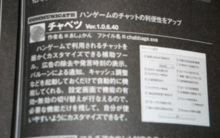
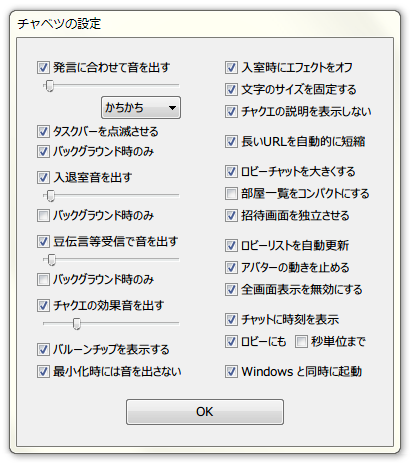

ハンゲームのチャットをベンリにするツール
チャベツがPC情報誌iP!4月号に掲載されました。

2016/12/17 チャベツ 1.6.1.90 をリリースしました。
インストールするだけであとは自動的に機能します。
タスクトレイに入っているキャベツのアイコンを右クリックすると設定画面を開くことができます。

チャベツには様々な便利な機能が付いています。
総去防御はもちろんのこと、チャットの多重起動も標準装備。
ロビーチャットでコピー＆ペーストができるようになったり、
URLをダブルクリックだけで開けるようになったり、
メインチャットに発言時刻を表示するというようなものまで。
さらにはハンゲームがパソコンに書き込むデータを調整することで、
パソコン全体の動作が重くなることまで防げるのです。
あまり高機能だと重いのではないかと心配な方も多いはずです。
チャベツは一般的なチャット用ツールと比べ、メモリ使用量にして約1/8。
CPU使用率はなんと1/1000以下という超低負荷を実現しています。
チャベツは高機能でありながら、パソコンに影響を与えずスムーズに動くのです。
出所のわからないツールにはウィルスなどの危険が潜んでいます。
チャベツは50以上のアンチウィルスソフトによるチェックをしており、
ウィルス混入の可能性なども限りなく低く安心です。
また、あしょかん印のツールは今まで雑誌などにも多く掲載されており、
その安全性の高さは各方面によって証明されています。
多くの人に快適なチャットを楽しんでもらいたいという作者の考えから
チャベツは永久に無料で提供されます。